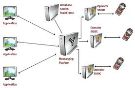

Un gateway (dall'inglese, portone, passaggio) e' un dispositivo di rete che opera al livello di rete e superiori del modello ISO/OSI. Il suo scopo principale e' quello di veicolare i pacchetti di rete al esterno di una rete locale (LAN).